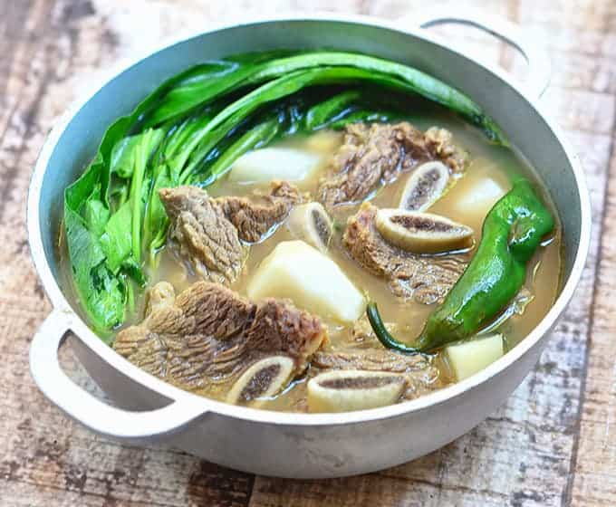

Sinigang na Baka/Beef Rib Sinigang

Description
A beef rib stew with a healthy inclusion of various vegetables, with a
slightly sour tamarind punch; it's the perfect meal for rainy days or when
you need some energy.
Ingredients
- 3 pounds beef short ribs
- 10 cups water
- 1 onion, peeled and quartered
- 2 large Roma tomatoes, quartered
- 1 tablespoon patis fish sauce
- 6 gabi or taro or potatoes, peeled and halved depending on size
- 2 finger chilies
-
1 (6 inches) radish (labanos or daikon), peeled and cut into 1/2-inch
thick on a bias
-
15 large tamarind pieces or 1 1/2 (1.41 ounces each) packages tamarind
base powder
- 1 bunch kangkong Chinese water spinach
- salt and pepper to taste
Cooking Steps
-
In a pot over medium heat, combine beef ribs and water. Bring to a boil,
skimming scum that floats on top.
- When the broth has cleared, add onions, tomatoes, and fish sauce.
-
Lower heat, cover and cook for about 1 1/2 to 2 hours or until meat is
fork-tender.
- Add gabi or taro and cook for about 6 to 8 minutes or until soft.
-
Add chili and radish. Continue to simmer for about 2 to 3 minutes.
-
Trim about 2 inches from the kangkong stalks and discard. Cut kangkong
into 3-inch lengths, separating the sturdier stalks from the leaves.
-
If using packaged tamarind base, add into the pot and stir until
completely dissolved. Season with salt and pepper to taste.
-
Add kangkong Chinese water spinach and continue to cook for about 1
minute. Serve hot, preferably with warm steamed white rice on the side.
Cooking Steps When Using Fresh Tamarind
-
Wash tamarind and place in a pot with 1 cup water. Bring to a boil and
cook until soft and outer skins begin to burst.
- With a fork, mash tamarinds.
-
In a fine-mesh strainer set over a bowl, pour tamarind and liquid.
Continue to mash with a fork, returning some of the liquid into the
strainer once or twice, to fully extract the juice.
- Discard seeds and skins. Pour tamarind juice into the sinigang.
Back to Main Page